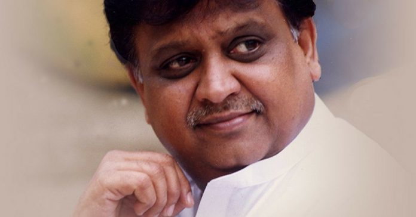

:format(jpeg):mode_rgb():quality(40)/discogs-images/R-8811937-1469287304-3835.jpeg.jpg)


Sripathi Panditaradhyula Balasubrahmanyam (4 June 1946 – 25 September 2020), also referred to as S. P. B. or Balu, was an Indian musician, playback singer, television anchor, music director, actor, dubbing artist, and film producer who worked predominantly in Telugu, Tamil, Kannada, Hindi, and Malayalam films.

Widely regarded as one of the greatest singers of India, He won six National Film Awards for Best Male Playback Singer for his works in four different languages; Telugu, Tamil, Kannada, and Hindi; 25 Andhra Pradesh state Nandi Awards for his work in Telugu cinema, and numerous other state awards from Karnataka and Tamil Nadu.In addition, he won the Filmfare Award, and six Filmfare Awards South.According to some sources, he held the Guinness World Record for recording the highest number of songs by a singer with over 40,000 songs. He recorded 21 songs in Kannada for the composer Upendra Kumar in Bengaluru from 9 am to 9 pm on 8 February 1981. In addition, he recorded 19 songs in Tamil and 16 songs in Hindi in a day, which has also been called a record.In 2012, he received the state NTR National Award for his contributions to Indian cinema.In 2016, he was honoured with the Silver Peacock Medal as Indian Film Personality of the Year. He was a recipient of the Padma Shri (2001) and Padma Bhushan (2011) from the Government of India.
| Film | Songs | Year | Album Images |
|---|---|---|---|
| Sukha Dukhalu | O Padaharu Naa Vayasu, O Andaalu Chinde, Medante Meda Kaadu | 1968 |
|
| Sri Rama Katha | Ragamayam Anuragamayam, Orpuvahinchi Pedhakika | 1969 |
|
| Ramalayam | Yenduku Bidiyam Chittemma, Iila Iila Raaye | 1971 |
|
| Ram Raheem | Egire Gaali Pataaniki, Prapancha Mantha Jhutta | 1974 |
|
| Kalyana Ramudu | Neeke Manasu, Nene Neku Pran | 1980 |
|
| Sagara Sangamam | Thakita Thadimi, Naada Vinodamu, Vevela Gopemmala | 1983 |
|
| Alludugaru | Ammo Ammo, Konda Meedha | 1990 |
|
| Roja | Naa Cheli Rojave, Paruvam Vaanaga, Nagamani Nagamani | 1992 |
|
| Seema Simham | Kokaa Raikaa | 2002 |
|
| Annayya | Saiyyare Saiyya, Chandhamaamalu | 2000 |
|
| Kadante Avunanile | Jhanana Jhanana | 2005 |
|
| Godavari | Uppongele Godavari | 2006 |
|
| Brahma – The Creator | Poosindi Pootha | 2007 |
|
| Okka Magaadu | Pattuko Pattuko | 2008 |
|
| DARBAR | Chumma Kizhi | 2019 |
|

S. P. Balasubrahmanyam was born in Nellore, Madras Presidency (present-day Andhra Pradesh) into a Telugu Brahmin family. His father, S. P. Sambamurthy, was a Harikatha artist who also acted in plays. His mother was Sakunthalamma, who died on 4 February 2019.He had two brothers and five sisters, including singer S. P. Sailaja.His son S. P. Charan is also a popular South Indian singer,actor, and producer.
Balasubrahmanyam developed an interest in music at an early age, studied musical notations, and learned music. He enrolled at the JNTU College of Engineering Anantapur with the intention of becoming an engineer. He discontinued his studies early due to typhoid and joined as an associate member the Institution of Engineers, Chennai.
Balasubrahmanyam continued to pursue music during his engineering studies and won awards at singing competitions. In 1964, he won the first prize in a music competition for amateur singers organized by the Madras-based Telugu Cultural Organization. He was the leader of a light music troupe composed of Anirutta (on the harmonium), Ilaiyaraaja (on guitar and later on harmonium), Baskar (on percussion), and Gangai Amaran (on guitar). He was selected as the best singer in a singing competition which was judged by S. P. Kodandapani and Ghantasala.Often visiting music composers seeking opportunities, his first audition song was "Nilave Ennidam Nerungadhe". It was rendered by veteran playback singer P. B. Srinivas, who used to write and give him multi-lingual verses in Telugu, Tamil, Hindi, Kannada, Malayalam, Sanskrit, English and Urdu.

Balasubrahmanyam made his debut as a playback singer on 15 December 1966 with Sri Sri Sri Maryada Ramanna, a Telugu film scored by his mentor, S. P. Kodandapani. The first non-Telugu song that he recorded just eight days after his debut Telugu song was in Kannada in 1966 for the film Nakkare Ade Swarga, starring Kannada comedy stalwart T. R. Narasimharaju. He recorded his first Tamil song "Athaanodu Ippadi Irundhu Eththanai Naalaachu", a duet with L. R. Eswari under the musical direction of M. S. Viswanathan for the film Hotel Ramba, which was never released. Other early songs he sang were duets with P. Susheela, "Iyarkai Ennum Ilaya Kanni" in the 1969 film Shanti Nilayam, starring Gemini Ganesh, and "Aayiram Nilavae Vaa" for M. G. Ramachandran in Adimaippenn.His first song with S. Janaki was "Pournami Nilavil Pani Vizhum Iravil" in Kannippenn. He was then introduced to the Malayalam film industry by G. Devarajan in the film Kadalppalam.

Balasubrahmanyam had the distinction of rendering the most songs on a single day by any singer.He had recorded 21 songs in Kannada for the composer Upendra Kumar in Bangalore from 9:00 am to 9:00 pm on 8 February 1981 and 19 songs in Tamil, 16 songs in Hindi in a day. In his words, "There were days when I used to record 15–20 songs, but only for Anand-Milind. And I would take the last flight back to Chennai."In the 1970s, he also worked with M. S. Viswanathan in Tamil movies for actors such as M. G. Ramachandran, Sivaji Ganesan and Gemini Ganesan. He recorded duets with P. Susheela, S. Janaki, Vani Jayaram and L. R. Eswari. Balasubrahmanyam's association with Ilaiyaraaja began even before Ilaiyaraaja came to the cine field. In the early days, he used to sing in towns and villages all over south India and Ilaiyaraaja, then an unknown harmonium and guitar player accompanied him in his concerts.

Balasubrahmanyam came to international prominence with the 1980 film Sankarabharanam. The film is considered to be one of the best films ever to emerge from the Telugu film industry. Directed by K. Vishwanath, the film's soundtrack was composed by K.V. Mahadevan, and led to an increase in the usage of Carnatic music in Telugu cinema. Not a classically trained singer, he used a "film music" aesthetic in recording the songs. Balasubrahmanyam received his first National Film Award for Best Male Playback Singer for his work. His first work in Hindi films was in the following year, in Ek Duuje Ke Liye (1981), for which he received another National Film Award for Best Male Playback Singer.

Balasubrahmanyam began to record more songs in Tamil and Telugu, especially for Ilaiyaraaja with S. Janaki, the trio considered to be highly successful in the Telugu film industry from the late 1970s and throughout the 1980s. The songs were based on classical music, such as in Saagara Sangamam (1983) and Rudraveena (1988), for which both Ilaiyaraaja and Balasubrahmanyam won National Awards for Best Music Director and Best Male Playback Singer respectively.

In 1989, Balasubrahmanyam was the playback singer for actor Salman Khan in the blockbuster Maine Pyar Kiya. The soundtrack for the film was very successful and he won a Filmfare Award for Best Male Playback Singer for the song Dil Deewana. For much of the next decade, Balasubrahmanyam continued as the "romantic singing voice" on the soundtracks of Khan's films. Notable among these was Hum Aapke Hain Koun..! which became the highest-grossing Hindi film of all time. Balasubrahmanyam's duet with Lata Mangeshkar, "Didi Tera Devar Deewana", was very popular. This solidified Balasubrahmanyam as one of the biggest playback singers in India. SP Balasubrahmanyam became identified as Salman Khan's voice in the 90s just like Kishore Kumar became Rajesh Khanna’s voice through the 70s.

In the 1990s, he worked with composers such as Vidyasagar, M. M. Keeravani, Hamsalekha, S. A. Rajkumar and Deva among others, but his association with A.R.Rahman turned out be a major success.
Balasubrahmanyam recorded three songs for A. R. Rahman in the latter's debut film Roja. He had a long-time association with Rahman right from Roja. Other popular songs include "July Maadham" from Pudhiya Mugam, which also marked the debut of singer Anupama, "Mannoothu Manthayilae" from Kizhakku Cheemayile which was a folk number and he almost sang all songs in the musical love story Duet and "Thanga Thaamarai" from Minsara Kanavu which fetched him, the sixth and latest of his National Film Awards for Best Male Playback Singer to date.
Balasubrahmanyam's association with Hamsalekha began after the latter's successful venture Premaloka in Kannada. Balasubrahmanyam sang the most songs for Hamsalekha in Kannada. He received his fourth National Film Award for Best Male Playback Singer for the song "Umandu Ghumandu" from the Kannada film Ganayogi Panchakshari Gavayi (1995), which was a Hindustani classical music-based composition by Hamsalekha.

In 2013, Balasubrahmanyam recorded the title song for Chennai Express – "Chennai Express", singing for the lead actor Shahrukh Khan, under the music direction of Vishal-Shekhar, breaking his 15-year hiatus from Hindi cinema music.
In May 2020, SPB crooned a song on humanity titled "Bharath Bhoomi" which was composed by Ilaiyaraaja as a tribute to the people such as police, doctors, nurses and janitors who have been significantly working amid COVID-19 pandemic. The video song was officially unveiled by Ilaiyaraaja through his official YouTube account on 30 May 2020 in both Tamil and Hindi languages.

Balasubrahmanyam accidentally became a dubbing artist with K. Balachander's film Manmadha Leela, the dubbed Telugu version of Manmadha Leelai, providing voice-over for Kamal Haasan. He has also provided voice-overs for various artists, including Kamal Haasan, Rajinikanth, Vishnuvardhan, Salman Khan, K. Bhagyaraj, Mohan, Anil Kapoor, Girish Karnad, Gemini Ganesan, Arjun Sarja, Nagesh, Karthik, and Raghuvaran in various languages. He was assigned as the default dubbing artist for Kamal Haasan in Telugu-dubbed versions of Tamil films. For the Telugu version of Dasavathaaram, he gave voice to seven characters (including the female character) out of ten characters played by Kamal Haasan. He was awarded the Nandi Award for Best Male Dubbing Artist for the films Annamayya and Sri Sai Mahima. He dubbed for Nandamuri Balakrishna for the Tamil version of the movie Sri Rama Rajyam in 2012. He also dubbed for Ben Kingsley in the Telugu-dubbed version of Gandhi.

On 5 August 2020, Balasubrahmanyam tested positive for COVID-19 and was admitted to MGM Healthcare in Chennai. Subsequently, his health deteriorated and he was shifted to the intensive care unit in a critical state. He required a ventilator and extracorporeal membrane oxygenation (ECMO) support. His son Charan provided periodic updates over social media, while members of the Tamil film industry engaged in a mass prayer via Zoom on 20 August and candlelight vigils were held by fans outside the hospital. On 7 September 2020, Balasubrahmanyam tested negative for the coronavirus, although he remained using a ventilator and ECMO. He started showing signs of recovery, including light speech and physical activities.However, the hospital released a statement on 24 September stating that he became "extremely critical" and was on "maximal life support".
He died on 25 September 2020 at 1:04 pm (IST) of cardio-respiratory arrest after over a month-long hospitalisation. He was buried at his farm house in Tamaraipakam, Thiruvallur district with state honours on 26 September 2020.